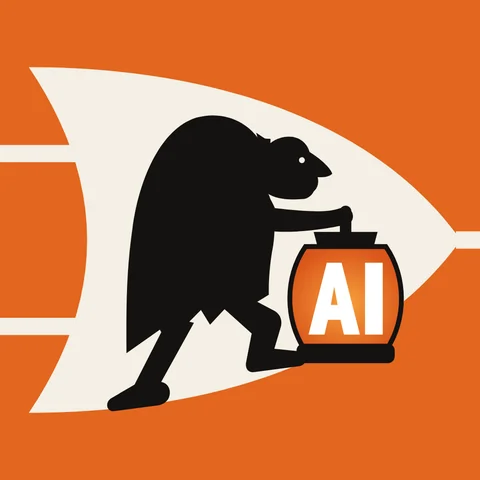
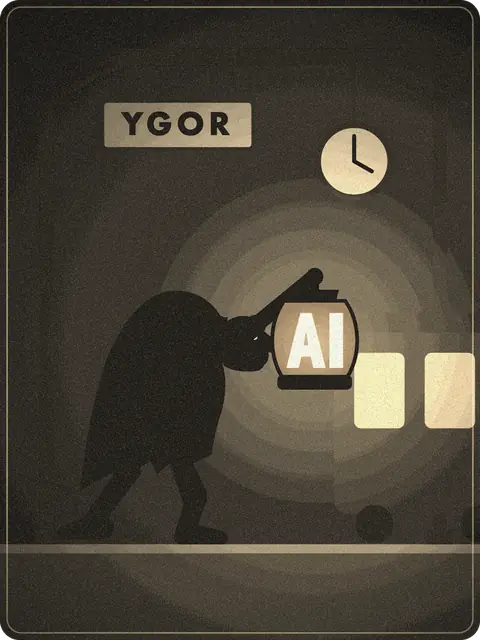
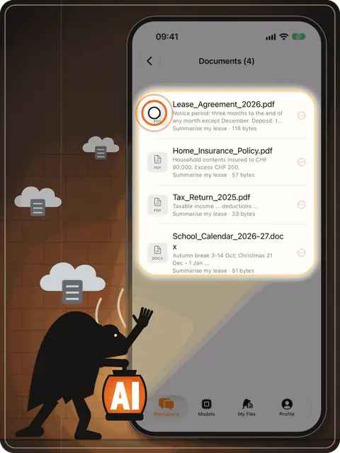
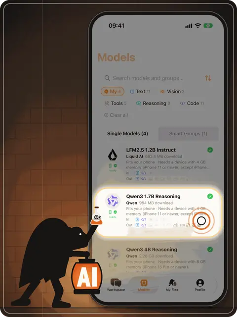
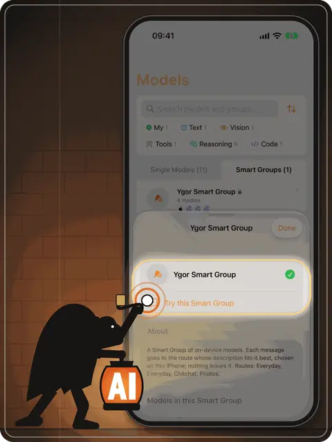
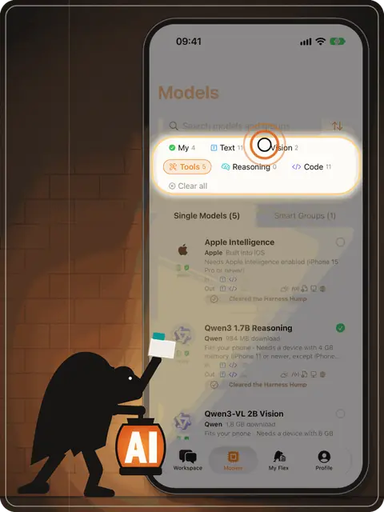
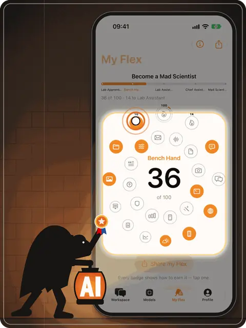
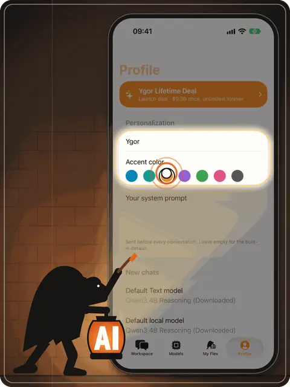
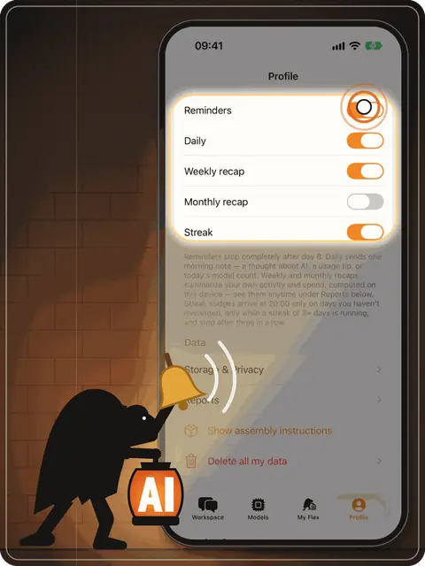

Made by Apple Cupertino, California
Apple Intelligence
Apple's on-device foundation model. It ships with iOS and changes with it.
Needs iPhone 15 Pro or newer, with Apple Intelligence turned on. Dots: the developer's own estimate.

Ygor say Eee-gor
Ygor is your faithful lab assistant. He carries AI models onto your iPhone and runs them right there: your chats are saved on the device, and no cloud AI ever sees them.
Small local models are sometimes a little slower than the giants in a data centre. That's the price of keeping everything to yourself, and we think it's a fair trade.
How Ygor works
A private AI assistant that lives on your iPhone: what it does, where your data stays, and what to expect from small on-device models.

01
I'm Ygor. Eee-gor. Your AI assistant.
Let me show you around.
Ygor is the assistant who lives inside the app. You can give him another name later. He works on your iPhone, not on a server.

02
I don't trust clouds. Your iPhone has the brain and the storage.
Your chats and files stay here.
Every chat is saved as a file in Ygor's own storage on your iPhone, together with the photos and documents you attach. There's no Ygor account and no Ygor server, so your conversations have nowhere else to go.

03
Small local models: smart, a bit slower.
Fair trade: fully private. Like any AI, I can make mistakes — double-check anything important.
Ygor doesn't rent a giant model in a data centre. He downloads a small open model once and runs it on your phone's own chip, so it even works offline. You see the download size before anything starts, and a reply can take a moment longer.

04
Don't switch models — a Smart Group picks the best one.
Start with mine: Ygor Smart Group.
Different models are good at different things. A Smart Group decides, on your iPhone, which of your models answers each message, so you never have to switch by hand.

05
More models wait in the catalog.
Filter, pick, download.
Browse open models from Qwen, Liquid AI, IBM, Google and Prism ML. Filter by what they can do (text, vision, tools, reasoning) and download only the ones you want. Delete any of them when you need the space back.

06
Try everything I can do.
Step by step, become an AI master.
My Flex turns learning AI into a game. Every feature you try moves you up, from Lab Apprentice to Master of Ygor, until you know what local AI can do. Your progress is kept on your iPhone and goes nowhere else.

07
Give me a name, pick your colors.
Call your assistant whatever you like and choose the app's accent colour. Ygor Orange is only the default.

08
Want a nudge when I have something for you?
Reminders, weekly and monthly recaps and streak nudges are all optional. They're worked out and scheduled on your iPhone, with no push server. Switch any of them off with one tap.
What's on the shelf
Every model below runs on your iPhone. Apple's comes with iOS. The others you download once from Hugging Face, with the size shown before anything starts, and delete whenever you like.
Made by Apple Cupertino, California
Apple's on-device foundation model. It ships with iOS and changes with it.
Needs iPhone 15 Pro or newer, with Apple Intelligence turned on. Dots: the developer's own estimate.
Made by Alibaba Cloud Qwen Team, Hangzhou
Switches between thinking and non-thinking modes in one model.
2.28 GB · 8 GB memory (iPhone 15 Pro or newer) · Apache 2.0
Made by Liquid AI Cambridge, Massachusetts
Post-trained with agentic reinforcement learning; 128K-token context window.
1.54 GB · 6 GB memory (iPhone 14 / 13 Pro or newer) · LFM Open License v1.0
Made by Google DeepMind London
2.3B effective parameters. Text only in Ygor.
3.58 GB · 12 GB memory (iPhone 17 Pro or iPhone Air) · Apache 2.0
Made by Prism ML built from Qwen3-8B
Ternary weights (−1, 0, +1) across the whole network, stored at 2 bits per weight.
2.32 GB · 8 GB memory (iPhone 15 Pro or newer) · Apache 2.0
Made by Alibaba Cloud Qwen Team, Hangzhou
Trained for 119 languages and dialects.
984 MB · 4 GB memory (iPhone 11 or newer, except iPhone SE 2nd generation) · Apache 2.0
Made by IBM Granite Team, Armonk, New York
Supports 12 languages, including German and French.
2.13 GB · 8 GB memory (iPhone 15 Pro or newer) · Apache 2.0
Made by Liquid AI Cambridge, Massachusetts
A hybrid of convolution and attention blocks, trained on 28 trillion tokens.
663 MB · 4 GB memory (iPhone 11 or newer, except iPhone SE 2nd generation) · LFM Open License v1.0
Made by Prism ML built from Qwen3-4B
Ternary weights, compressed from Qwen3-4B to about 1 GB.
1.14 GB · 6 GB memory (iPhone 14 / 13 Pro or newer) · Apache 2.0
Made by Alibaba Cloud Qwen Team, Hangzhou
Looks at the photos you attach. Reads text in 32 languages.
3.11 GB · 8 GB memory (iPhone 15 Pro or newer) · Apache 2.0
Made by Alibaba Cloud Qwen Team, Hangzhou
The smaller eye: looks at attached photos on more iPhones.
1.8 GB · 6 GB memory (iPhone 14 / 13 Pro or newer) · Apache 2.0
Made by Prism ML from Black Forest Labs' FLUX.2 klein 4B
Paints pictures from a text prompt, right on the phone, in four steps.
3.87 GB · 8 GB memory (iPhone 15 Pro or newer) · Apache 2.0
How to read the dots. Quality is the Ygor Lab test v2: 120 automatically scored items, run on 24 October 2026 on the exact files the app downloads. Speed comes from public measurements on iPhone 17 Pro and Pro Max (community tests and Prism ML's own figures) until our own speed test covers every model. Both compare on-device models with each other, not with cloud AI, and one dot apart is within test noise. Apple Intelligence can't be downloaded for the Lab test, so its dots are the developer's own estimate from internal tests (marked est.).
Model names belong to their makers. Ygor isn't affiliated with or endorsed by any of them.
House rules
They're saved as files in Ygor's own storage, with the photos and documents you attach. Nothing syncs on its own. A chat leaves only when you export or share it.
Each model in Ygor runs on your iPhone, so your prompts stay on your iPhone.
No account, no login, no telemetry, no analytics, no crash reporting. There's nowhere for us to receive your chats, so we don't.
With Web search on, a short query the assistant writes goes to Parallel Search. With Weather on, a place name goes to OpenStreetMap and its coordinates to Open-Meteo. Model files come from Hugging Face when you start a download. Your message and your conversation are never sent.
Delete all my data wipes everything Ygor has stored. So does deleting the app.
Questions
Ygor is a private AI assistant app for iPhone and iPad. It runs open AI language models directly on the device, so conversations are processed and stored on your iPhone instead of in a cloud.
No. Ygor has no server and no account. Chats, files and photos you attach are saved in the app's storage on your iPhone. Only what you explicitly switch on leaves the device, for example a web search you start.
Yes. Once a model is downloaded, chatting works without an internet connection. You need the internet only to download models and for optional features such as web search.
Apple's on-device model (Apple Intelligence) plus downloadable open models: Qwen3 4B and 1.7B, Qwen3-VL 4B and 2B (they can see photos), LFM2.5 2.6B and 1.2B by Liquid AI, Gemma 4 E2B by Google, Granite 4.1 3B by IBM, Ternary Bonsai 8B and 4B by Prism ML, and Bonsai Image 4B for making pictures on the device.
Not for everything. Small on-device models are a little slower and know less than the largest cloud models. In exchange nothing leaves your phone. Ygor shows quality and speed ratings for every model so you can pick the right one.
Ygor is built in Zurich, Switzerland, by Nick Gushchin. Write to hello@ygor.app.
Updates by email
Stay alerted on Ygor's and our lab's developments.
To get updates, write to support@ygor.app with the subject “Send me Ygor updates”. We'll add you by hand and confirm by email.
If the address is new to us, a confirmation email from hello@ygor.app is on its way. Click the link inside within 7 days. Nothing there? Look in spam, or try again in ten minutes.
Found a bug? Know a small model Ygor should test? Or just want to say hello? Send word to the lab.
hello@ygor.appIt opens your own mail app. No contact form, no trackers.